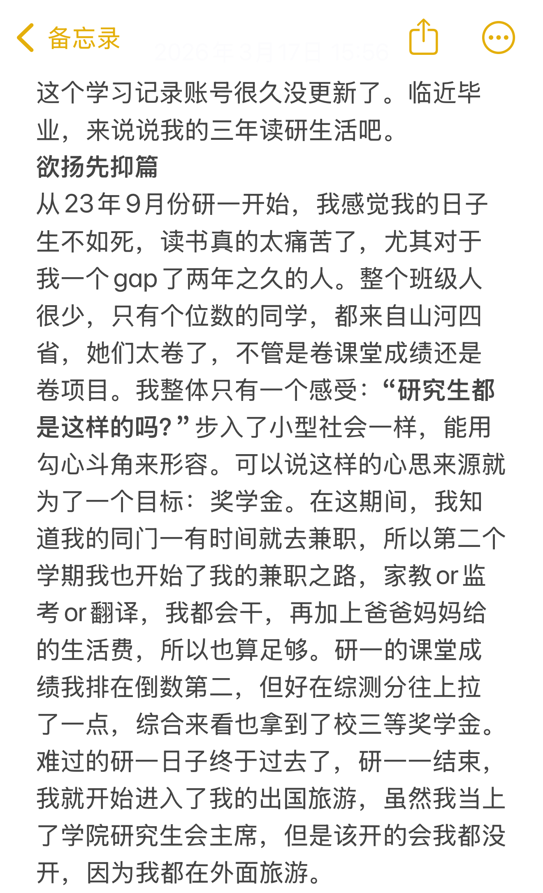
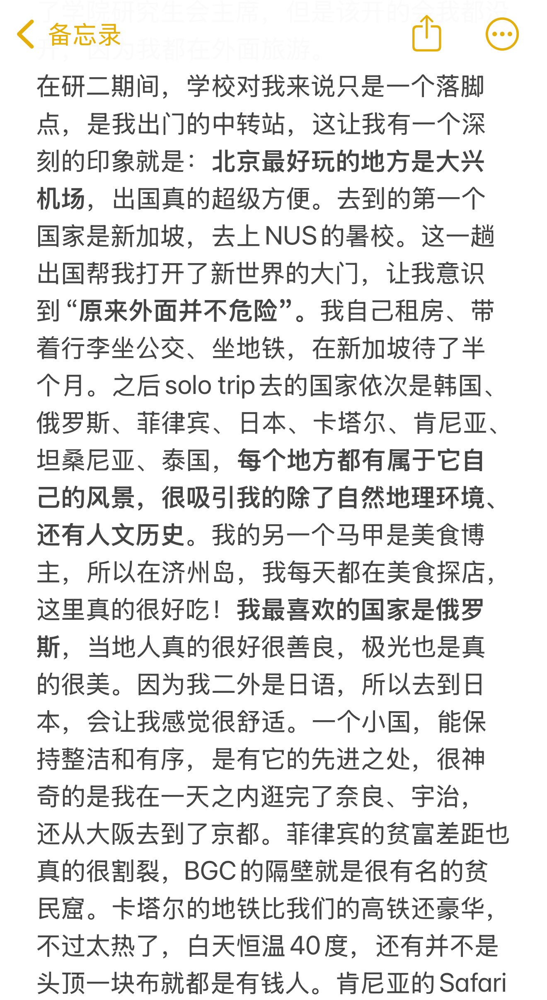
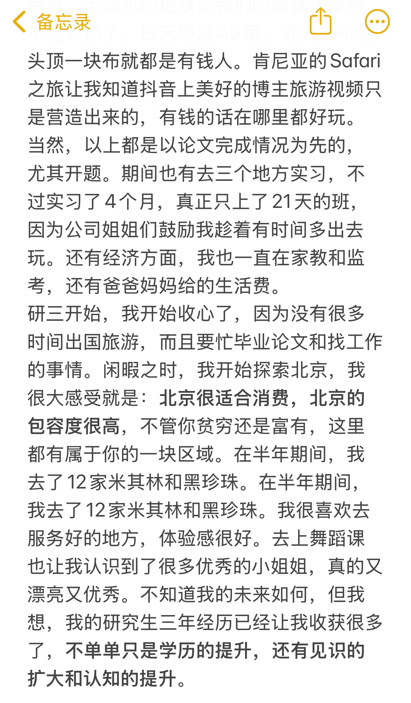

说真的，读研可以改变命运。读研确实改变了我的命运。
研一：欲扬先抑
2023年9月，时隔两年重新回到校园。班上只有个位数的学生，全都来自"山河四省"——那些高考竞争最激烈的省份。氛围太卷了，奖学金的争夺让同学关系变得微妙。
第一年过得很痛苦，成绩倒数第二，全靠综合测评拉上来，勉强拿了三等奖学金。但这一年结束后，我立刻开始了出国旅行，把研究生会主席的职责丢到一边——那是我重新夺回生活掌控权的方式。

研二：看见世界
研二是真正改变我的一年。因为在北京，大兴机场成了极好的出发地。第一次出国是去新加坡参加NUS暑期学校，那是我第一次意识到——原来外面并不危险。
之后，我一个人去了韩国、俄罗斯、菲律宾、日本、卡塔尔、肯尼亚、坦桑尼亚、泰国……我喜欢自然地理和人文历史，也爱探索美食，还以美食博主的"马甲"记录旅途中的味道。第二外语学了日语，最喜欢的国家是俄罗斯——那里的人很善良，我看到了极光。

研三：收心与成长
研三开始收心了。实习四个月，实际只去了21天班，其余时间靠做家教、监考、翻译来养活自己，当然也有家里的支持。
北京很适合消费，北京的包容度很高，不管你贫穷还是富有，这里都有属于你的一块区域。半年内我打卡了12家米其林和黑珍珠餐厅，去上了舞蹈课，遇见了很多很厉害的人。
现在快毕业了，未来还不确定，但回头看看这三年——读研给我的远不止一个学位。

读研三年，从山河四省的卷到世界的广阔，从倒数第二到打卡米其林，从痛苦到自由。这不是一个逆袭故事，这是一个找到自己的故事。